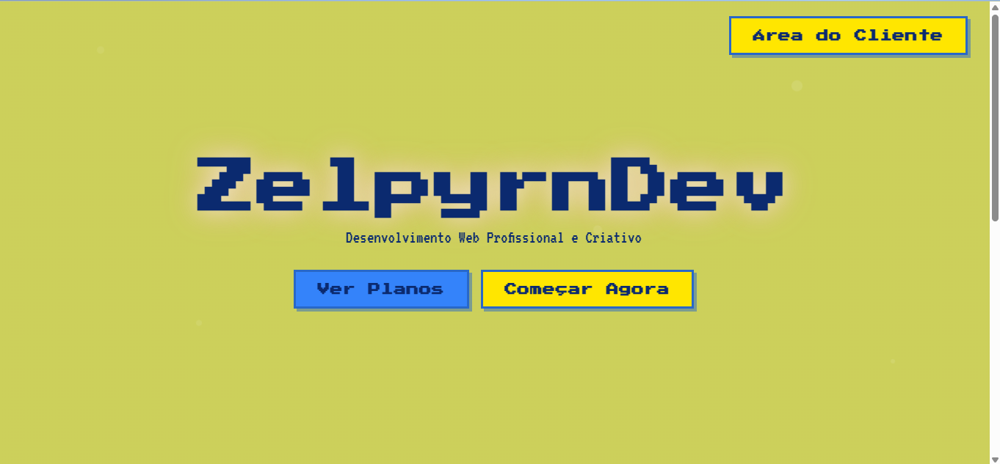
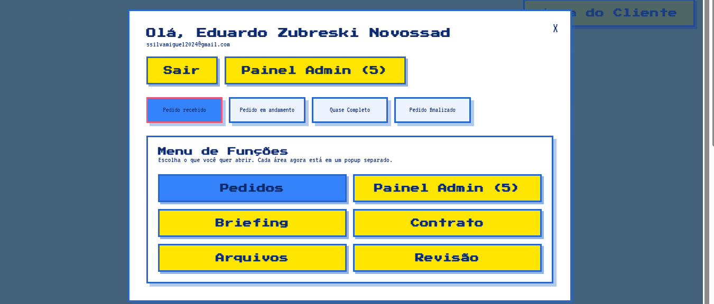
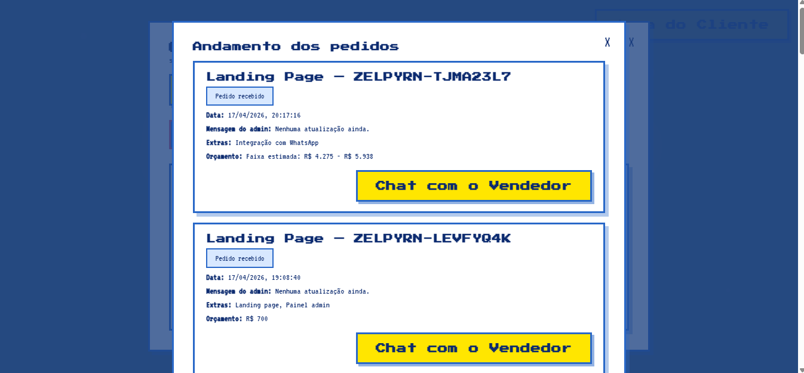
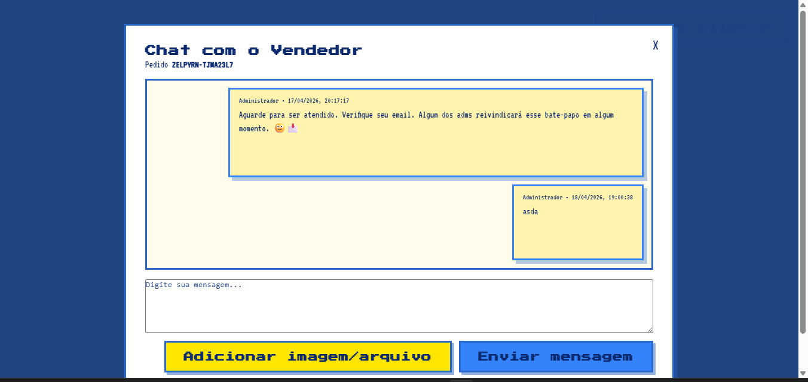

Direção visual
Paleta autoral, tipografia marcante, sombras profundas e camadas que dão sensação de interface viva.
Desenvolvimento web com identidade forte
Interfaces com cara premium, animações suaves, visual marcante e foco em conversão. Ideal para landing pages, páginas de venda, área do cliente e experiências web mais vivas.


Visão do projeto
O conceito aqui mistura estética retrô-futurista, legibilidade, contraste forte e sensação de produto real. Em vez de um portfólio genérico, a proposta é passar presença, autoridade visual e cuidado com detalhes.
Paleta autoral, tipografia marcante, sombras profundas e camadas que dão sensação de interface viva.
CTA sempre visível, navegação objetiva, seções organizadas e foco total em mostrar valor rápido.
Estrutura pronta para receber login real, integrações, formulários, CMS, Firebase e mais.
Projetos em destaque
Clique em qualquer projeto para abrir o detalhe em destaque.
Estrutura pronta para captação de leads, venda de serviço e branding memorável.
Visual robusto para produto digital, com navegação clara e módulos separados.

Boa para experiência pós-venda, acompanhamento e sensação de serviço profissionalizado.

Fluxo interessante para dar mais confiança, suporte e proximidade sem depender de WhatsApp.
Processo
Hero forte, promessa clara e visual instantaneamente reconhecível.
Imagens reais do sistema transformadas em vitrine com sensação de produto premium.
Base pronta para login real, Firebase, formulários dinâmicos, pagamentos e e-mails automáticos.
Stack sugerida
A interface já foi montada de forma modular. Isso facilita evoluir para autenticação, formulário com backend, integração com banco de dados e automações de negócio.
HTML, CSS e JavaScript puro para carregar rápido e ser fácil de subir no GitHub Pages.
Firebase Auth, Firestore, e-mail automático, painel admin e formulário com persistência.
Sem WhatsApp. A estrutura já favorece formulário, e-mail e botão para abrir atendimento dedicado.
Contato
Este modelo foi preparado para impressionar visualmente e também para ser expandido. Caso queira, depois dá para adicionar autenticação, formulário com envio real, área do cliente funcional, banco de dados e integrações.